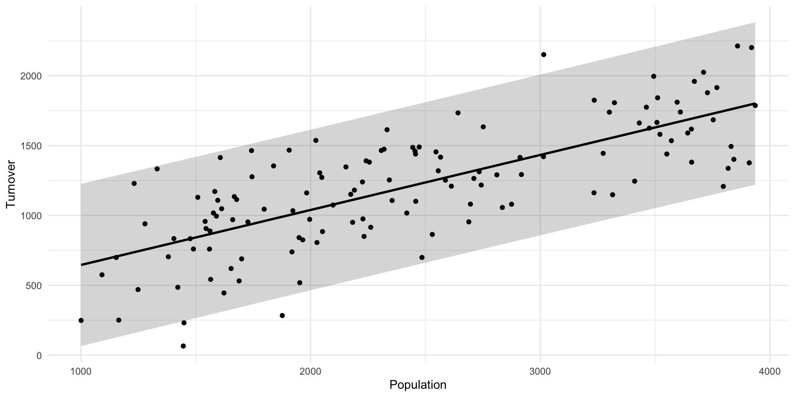
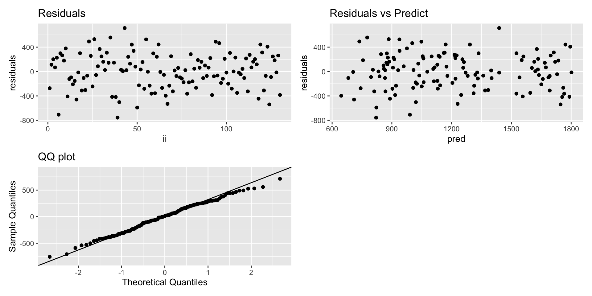
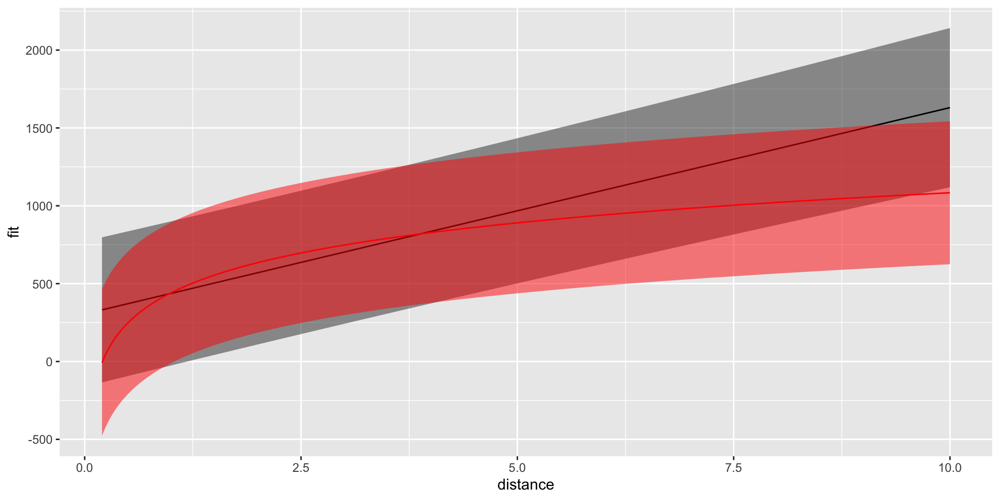

Our Data
Read the groceries.csv dataset.
Here you find the follwing variables:
- turnover: Weekly turnover (measured in 1000 NOK).
- population: Number of people living within 1 km of the store.
- distance: Distance (in km) to the nearest competing grocery store.
- central: Indicator variable equal to 1 if the store is located in a city center, 0 otherwise.
- mall: Indicator variable equal to 1 if the store lies within a mall (shopping center), 0 otherwise.
Our interest lies in predicting the turnover based on the other available data.
Exploratory analysis
- Create some plots to explore the relationship between turnover and the other variables
- Which quantities appear to influence the turnover?
Simple linear regression
- Create a linear model where the only covariate is distance
- How do you interpret the two estimated parameters?
- One of the output of the model is the \(R^2\) quantity, can you explain what it is?
Simple linear regression
Call:
lm(formula = turnover ~ population, data = groceries)
Residuals:
Min 1Q Median 3Q Max
-756.00 -207.81 11.03 218.85 712.81
Coefficients:
Estimate Std. Error t value Pr(>|t|)
(Intercept) 251.2913 79.2203 3.172 0.0019 **
population 0.3939 0.0308 12.790 <2e-16 ***
---
Signif. codes: 0 '***' 0.001 '**' 0.01 '*' 0.05 '.' 0.1 ' ' 1
Residual standard error: 289.1 on 128 degrees of freedom
Multiple R-squared: 0.561, Adjusted R-squared: 0.5576
F-statistic: 163.6 on 1 and 128 DF, p-value: < 2.2e-16
- If the population is 0, the turnover is ca 250 000 NOK per week (??)
- For each extra person leaving within 1 Km from the shop, the turnover increases by ca 390 NOK
Simple linear regression
- Plot the data together with the fitted regression line
- Add prediction intervals to the line, what do you learn?
- What is the predicted turnover (with uncertainty) for a shop that in an area where 2000 people live?
Simple linear regression

fit lwr upr
1 1039.141 464.1976 1614.084
Simple linear regression - residuals
The residuals, in this case, are defined as the observed minus the predicted turnover
- Compute the residuals and plot them
- Create a QQ plot of the residuals, what does this indicate?
- What are we looking for in a residual plot?
- Which model assumption are we checking when looking at residuals?
Simple linear regression - residuals

Model assumption and residuals
Remember: \[
y_i = \underbrace{\beta_0 + \beta_1\ x_i}_{\text{Sistematic part}} + \underbrace{\epsilon_i}_{\text{Random part/ error}}, \qquad \epsilon_i\sim\mathcal{N}(0,\sigma^2)
\]
The key assumption we check with residuals is:
The errors should behave like (gaussian) random noise.
A residual plot should therefore show:
- Random scatter around 0
- Roughly the same amount of spread across the range
- No obvious curve or other pattern
- No “funnel” shape
Improving the model
Add the distance covariate to the model
How do you interpret the estimated parameters?
What happened to the parameter for population? Why?
Check if this has improved the model using \(R^2\)
You could consider instead to use log(distance), why would that make sense?
Plot the predicted turnover for both model when population is 1000 and the distance goes from 0 to 10 km. (You can add prediction uncertainties). What do you notice?
Improving the model
Model 0 (only population)
Call:
lm(formula = turnover ~ population, data = groceries)
Residuals:
Min 1Q Median 3Q Max
-756.00 -207.81 11.03 218.85 712.81
Coefficients:
Estimate Std. Error t value Pr(>|t|)
(Intercept) 251.2913 79.2203 3.172 0.0019 **
population 0.3939 0.0308 12.790 <2e-16 ***
---
Signif. codes: 0 '***' 0.001 '**' 0.01 '*' 0.05 '.' 0.1 ' ' 1
Residual standard error: 289.1 on 128 degrees of freedom
Multiple R-squared: 0.561, Adjusted R-squared: 0.5576
F-statistic: 163.6 on 1 and 128 DF, p-value: < 2.2e-16
Model 1 ( population + distance)
Call:
lm(formula = turnover ~ population + distance, data = groceries)
Residuals:
Min 1Q Median 3Q Max
-529.7 -208.6 4.2 184.3 534.1
Coefficients:
Estimate Std. Error t value Pr(>|t|)
(Intercept) -70.1711 72.7041 -0.965 0.336
population 0.3754 0.0245 15.322 < 2e-16 ***
distance 132.5288 15.1192 8.766 1.02e-14 ***
---
Signif. codes: 0 '***' 0.001 '**' 0.01 '*' 0.05 '.' 0.1 ' ' 1
Residual standard error: 229.1 on 127 degrees of freedom
Multiple R-squared: 0.7265, Adjusted R-squared: 0.7222
F-statistic: 168.7 on 2 and 127 DF, p-value: < 2.2e-16
Improving the model

Adding categorical covariates
We want to check weather being in a mall or being in the city center has also an effect on the turnover.
- Fit a model where you have population, log(distance) and you add the variable mall
- How do you interpred the pararameter for mall?
Adding categorical covariates
Call:
lm(formula = turnover ~ population + log(distance) + mall, data = groceries)
Residuals:
Min 1Q Median 3Q Max
-558.69 -134.43 16.65 155.96 500.48
Coefficients:
Estimate Std. Error t value Pr(>|t|)
(Intercept) 15.88748 58.84205 0.270 0.788
population 0.35170 0.02189 16.065 < 2e-16 ***
log(distance) 277.19777 26.99831 10.267 < 2e-16 ***
mall 197.05599 35.91302 5.487 2.15e-07 ***
---
Signif. codes: 0 '***' 0.001 '**' 0.01 '*' 0.05 '.' 0.1 ' ' 1
Residual standard error: 201.8 on 126 degrees of freedom
Multiple R-squared: 0.7895, Adjusted R-squared: 0.7845
F-statistic: 157.5 on 3 and 126 DF, p-value: < 2.2e-16